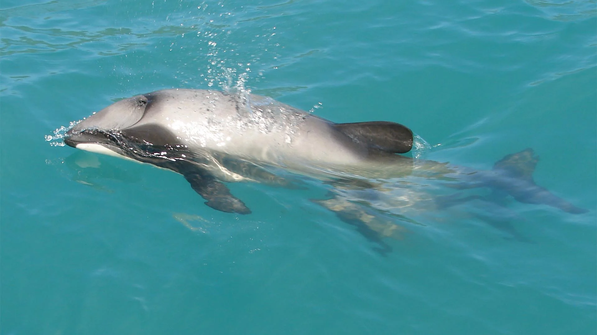
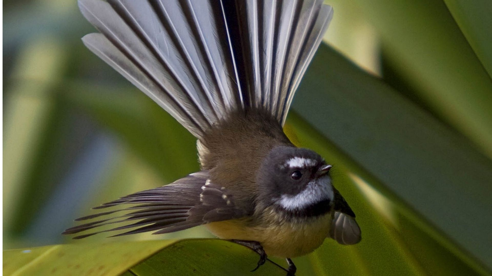

Aotearoa: A Haven for Endemic Species
New Zealand's geographical isolation for millions of years has resulted in the evolution of incredibly unique wildlife, many species of which are endemic, meaning they are found nowhere else on Earth. Before human arrival, the land was dominated by birds, insects, and reptiles, with no native land mammals except for bats.
This distinct evolutionary path has led to a remarkable diversity of flightless birds, giant insects, and ancient reptiles, making New Zealand a biodiversity hotspot. However, many of these species are now endangered due to introduced predators and habitat loss, making conservation efforts paramount.
Featured Native Species
Click on the cards below to learn more about some of New Zealand's fascinating native animals:

Kea
The world's only alpine parrot, known for its intelligence and curious nature.

Blue Duck / Whio
New Zealand's unique river duck, thriving in fast-flowing waters.

Kōkako
An ancient forest bird with a haunting, flute-like song and distinctive blue wattle.

Kiwi
New Zealand's iconic, flightless national bird, a symbol of the country.
Hector's Dolphin
One of the smallest and rarest marine dolphins in the world, endemic to NZ.
Fantail (Pīwakawaka)
A common, friendly, and acrobatic native bird with a distinctive fanned tail.